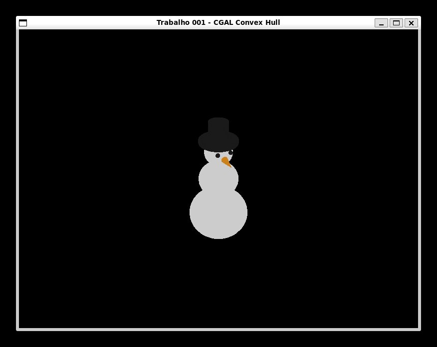
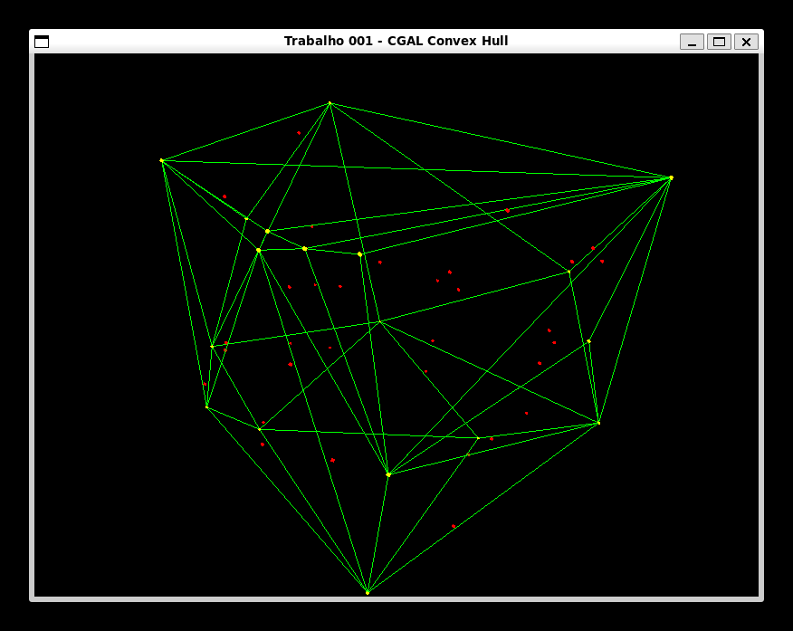
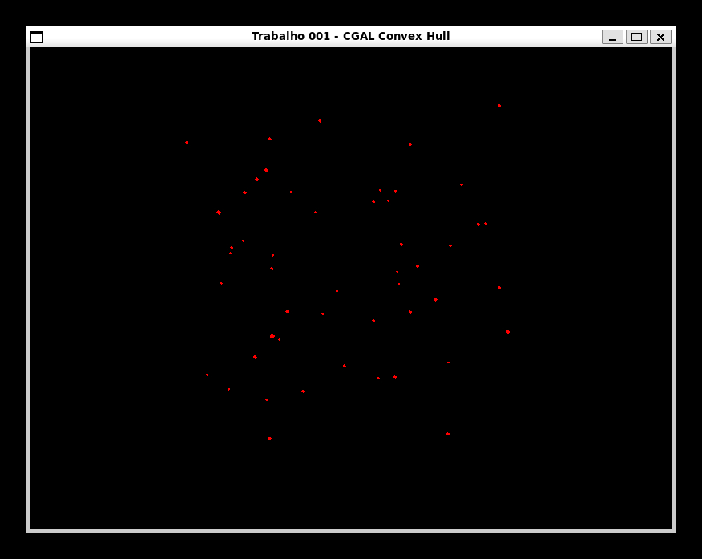
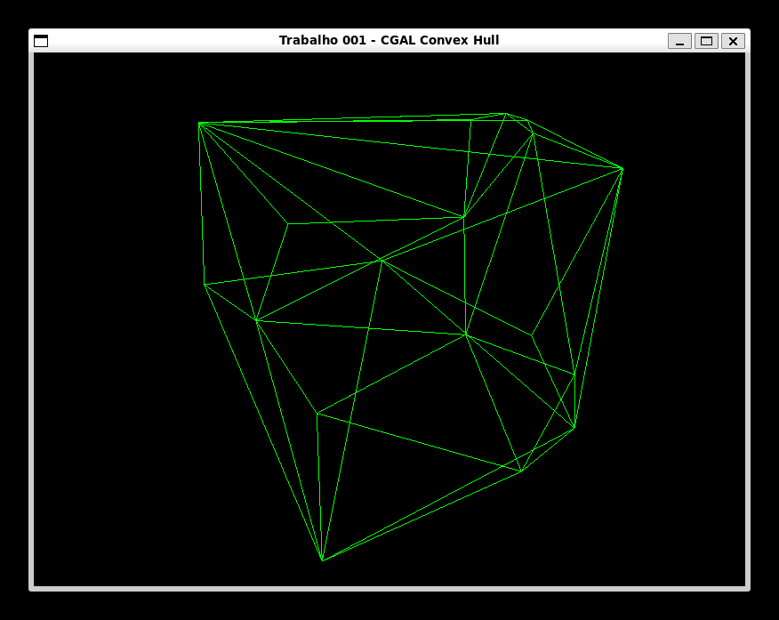
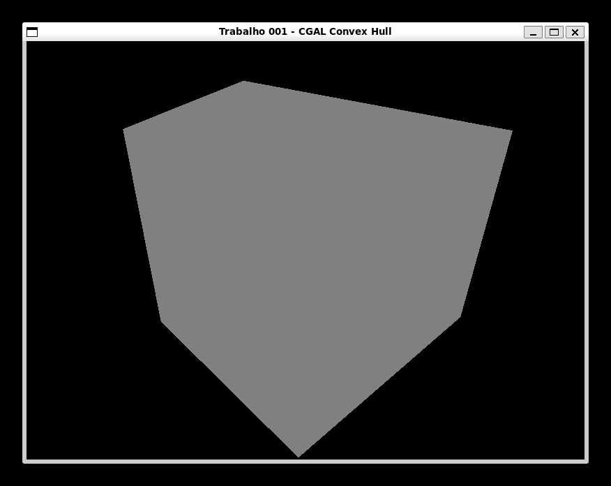
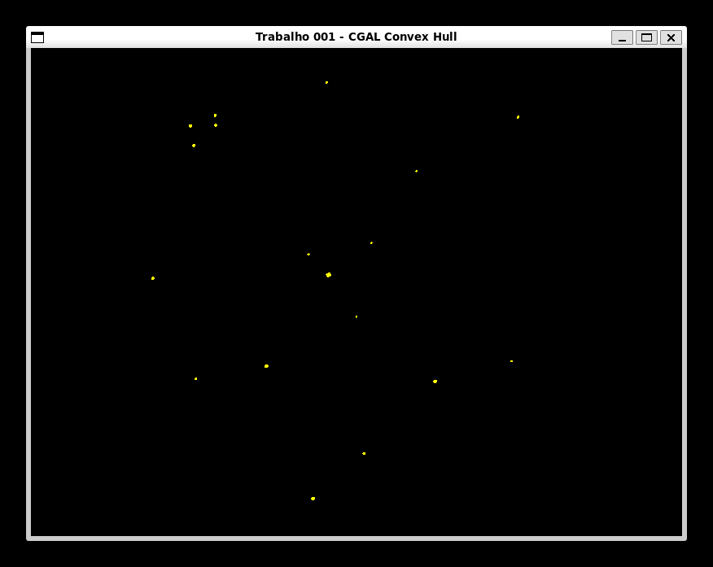
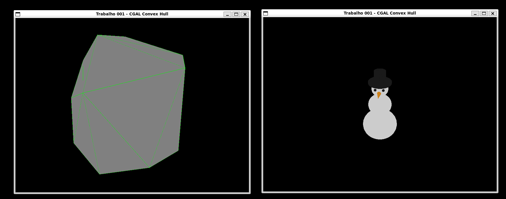

convex_hull_3dconvex_hull_3d é um projeto em C++ que demonstra o cálculo e a visualização de fechos convexos (convex hulls) em um ambiente 3D. Ele utiliza a biblioteca CGAL para a computação geométrica e SDL2 com OpenGL para a renderização gráfica interativa.
Cálculo de Fecho Convexo:
.obj.convex_hull_compute.cpp e utiliza a biblioteca CGAL.Modelos 3D:
Convex Hull separadamente. O tema escolhido foi um Boneco de Neve.

Convex Hull nestes pontos. Ideal para ver os pontos internos aos pontos gerados pelo Convex Hull.

Visualização 3D Interativa:
P: Alterna a exibição dos pontos originais.

L: Alterna a exibição das arestas (linhas) do fecho convexo.
F: Alterna a exibição das faces (polígonos) do fecho convexo.
V: Alterna a exibição dos vértices que compõem o fecho convexo.
R: Alterna entre a visualização do fecho convexo aleatório e o carregado do arquivo .obj.
O código-fonte está organizado da seguinte forma:
CMakeLists.txt: Arquivo de build que define como o projeto é compilado. Ele localiza e vincula as dependências (SDL2, OpenGL, CGAL) e estrutura o executável final.vcpkg.json: Gerencia as dependências do projeto através do vcpkg, incluindo sdl2, opengl, cgal, glm e imgui.app/: Contém todo o código-fonte da aplicação.
main.cpp: Ponto de entrada da aplicação. É responsável por criar a janela, gerenciar o loop de eventos e orquestrar as chamadas para a lógica de cálculo e renderização.src/public/: Interfaces públicas dos módulos da aplicação.
convex_hull_compute.hpp/.cpp: Funções que encapsulam a lógica de cálculo do fecho convexo com CGAL.window.hpp/.cpp: Classe que abstrai a criação e gerenciamento da janela com SDL2.renderer.hpp/.cpp: Classe responsável pela lógica de renderização com OpenGL (desenho de pontos, linhas, polígonos e esferas).assets/: Diretório para armazenar arquivos de mídia, como entrada.obj, que é o modelo 3D carregado pela aplicação.script.py: Um script Python auxiliar que simplifica tarefas comuns de desenvolvimento:
clean: Limpa o diretório de build.configure: Executa o CMake para configurar o projeto.build: Compila o código-fonte.run: Executa a aplicação.build-run: Compila e executa em um único comando.O script script.py facilita o processo de build e execução.
Pré-requisitos:
vcpkg com as dependências do vcpkg.json instaladas.Compilar o projeto:
python3 script.py build
Executar a aplicação:
python3 script.py run
VSCode:
CMake:
VCPKG: